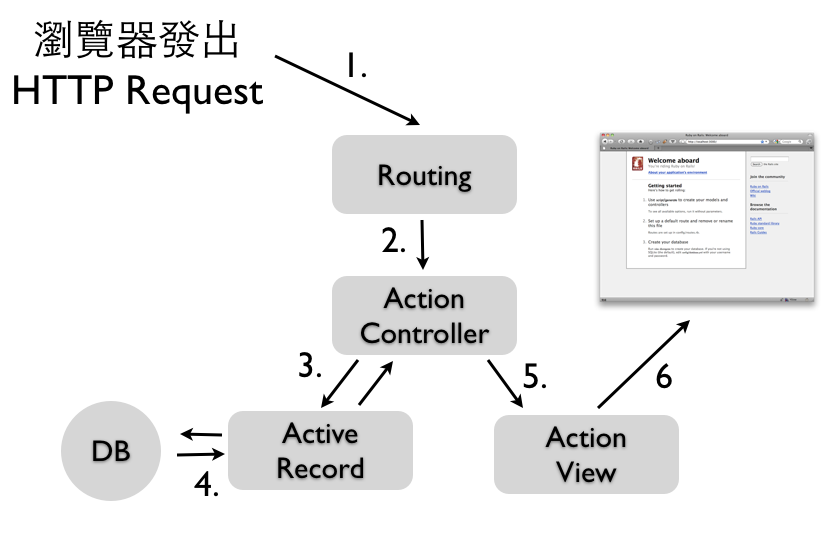

Much of the essence of building a program is in fact the debugging of the specification. - Fred Brooks, The Mythical Man-Month 作者
请注意本章内容衔接后一章，请与后一章一起完成。
初入门像Rails这样的功能丰富的开发框架，难处就像鸡生蛋、蛋生鸡的问题：要了解运作的原理，你必须了解其中的元件，但是如果个别学习其中的元件，又将耗费许多的时间而见树不见林。因此，为了能够让各位读者能够儘快建构出一个基本的应用程式，有个大局观。我们将从一个CRUD程式开始。所谓的CRUD即为Create、Read、Update、Delete等四项基本数据库操作，本章将示范如何做出这个基本的应用程式，以及几项Rails常用功能。细节的原理说明则待Part 2后续章节。
我们在第一章Ruby on Rails简介有介绍了什么是MVC架构，而在Rails中分成几个不同元件来对应：

这张图示中的执行步骤是：
其中，路由主要是根据HTTP Method方法(GET、POST或是PATCH、DELETE等)以及网址来决定派往到哪一个Controller的Action。例如，我们在「Rails起步走」一章中的get "welcome/say_hello" => "welcome#say"意思就是，将GET welcome/say_hello的这个HTTP request请求，派往到welcome controller的say action。
ActiveRecord是Rails的ORM(Object-relational mapping)元件，负责与数据库沟通，让你可以使用对象导向语法来操作关联式数据库，它的对应概念如下：
所以说数据库裡面的数据表，我们用一个Model类别表示。而其中的一笔资料，就是一个Model对象。
不了解关联式数据库的读者，推荐阅读MySQL 超新手入门从第0章至第5章CRUD与资料维护。
ActiveRecord 这个名称的由来是它使用了 Martin Fowler 的Active Record设计模式。
第三章「Rails起步走」我们提到了Scaffold脚手架功能，有经验的Rails程式设计师虽然不用脚手架产生程式码，不过还是会使用Rails的generator功能来分别产生Model和Controller档案。这里让我们来产生一个Model：
$ rails g model event name:string description:text is_public:boolean capacity:integer
这些指令必须要在Rails专案目录下执行，承第三章也就是demo目录下。
接着执行以下指令就会建立数据表(如果是使用SQLite3数据库话，会产生db/development.sqlite3这个档案)：
$ bin/rake db:migrate
接着，让我们使用rails console(可以简写为rails c) 进入主控台模式做练习：
# 新增
> event = Event.new
> event.name = "Ruby course"
> event.description = "fooobarrr"
> event.capacity = 20
> event.save # 储存进数据库，读者可以观察另一个指令视窗
> event.id # 输出主键 1，在 Rails 中的主键皆为自动递增的整数 ID
> event = Event.new( :name => "another ruby course", :capacity => 30)
> event.save
> event.id # 输出主键 2，这是第二笔资料
# 查询
> event = Event.where( :capacity => 20 ).first
> events = Event.where( ["capacity >= ?", 20 ] ).limit(3).order("id desc")
# 更新
> e = Event.find(1) # 找到主键为 1 的资料
> e.name # 输出 Ruby course
> e.update( :name => 'abc', :is_public => false )
# 删除
> e.destroy
和irb一样，要离开rails console请输入exit。如果输入的程式乱掉没作用时，直接Ctrl+Z离开也没关係。
Rails使用了Migration数据库迁移机制来定义数据库结构(Schema)，档案位于db/migrate/目录下。它的目的在于:
rake db:migrate
在上一节产生Model程式时，Rails就会自动帮你产生对应的Migration档案，也就是如db/migrate/20110519123430_create_events.rb的档案。Rails会用时间戳章来命名档案，所以每次产生档名都不同，这样可以避免多人开发时的衝突。其内容如下：
# db/migrate/20110519123430_create_events.rb
class CreateEvents < ActiveRecord::Migration
def change
create_table :events do |t|
t.string :name
t.text :description
t.boolean :is_public
t.integer :capacity
t.timestamps
end
end
end
其中的create_table区块就是定义数据表结构的程式。上一节中我们已经执行过bin/rake db:migrate来建立此数据表。
Migration档案不需要和Model一一对应，像我们来新增一个Migration档案来新增一个数据库栏位，请执行:
$ rails g migration add_status_to_events
如此就会产生一个空的 migration 档案在 db/migrate 目录下。Migration 有提供 API 让我们可以变更数据库结构。例如，我们可以新增一个栏位。输入rails g migration add_status_to_events然后编辑这个Migration档案：
# db/migrate/20110519123819_add_status_to_events.rb
class AddStatusToEvents < ActiveRecord::Migration
def change
add_column :events, :status, :string
end
end
接着执行bin/rake db:migrate就会在events表格中新增一个status的栏位，栏位型别是string。Rails会记录你已经对数据库操作过哪些Migrations，像此例中就只会跑这个Migration而已，就算你多执行几次bin/rake db:migrate也只会对数据库操作一次。
Rails通过数据库中的schema_migrations这张table来记录已经跑过哪些Migrations。
ActiveRecord的资料验证(Validation)功能，可以帮助我们检查资料的正确性。如果验证失败，就会无法存进数据库。
编辑app/models/event.rb加入
class Event < ActiveRecord::Base
validates_presence_of :name
end
其中的validates_presence_of宣告了name这个属性是必填。我们按Ctrl+Z离开主控台重新进入，或是输入 reload!，这样才会重新载入。
> e = Event.new
> e.save # 回传 false
> e.errors.full_messages
> e.name = 'ihower'
> e.save
> e.errors.full_messages # 显示验证失败的原因
呼叫save时，ActiveRecord就会验证资料的正确性。而这里因为没有填入name，所以回传false表示储存失败。
我们在「Rails起步走」一章分别为welcome/say_hello和welcome设定路由，如果每个路径都需要一条条设定会太麻烦了。这一章我们使用一种典型路由的设定，编辑config/routes.rb加入：
match ':controller(/:action(/:id(.:format)))', :via => :all
典型路由很容易理解，它会将/foo/bar这样的网址自动对应到Controller foo的bar Action。我们再下一章中我们会再改用另一种称作RESTful路由方式。
执行rails g controller events，首先编辑app/controllers/events_controller.rb加入
def index
@events = Event.all
end
Event.all会抓出所有的资料，回传一个阵列给实例变数(instance variables)指派给@events。在Rails会让Action裡的实例变数(也就是有@开头的变数)通通传到View样板裡面可以使用。这个Action预设使用的样板是app/views/events/目录下与Action同名的档案，也就是接下来要编辑的app/views/events/index.html.erb，内容如下:
<ul>
<% @events.each do |event| %>
<li>
<%= event.name %>
<%= link_to 'Show', :controller => 'events', :action => 'show', :id => event %>
<%= link_to 'Edit', :controller => 'events', :action => 'edit', :id => event %>
<%= link_to 'Delete', :controller => 'events', :action => 'destroy', :id => event %>
</li>
<% end %>
</ul>
<%= link_to 'New Event', :controller => 'events', :action => 'new' %>
这个View迭代了@events阵列并显示内容跟超连结，有几件值得注意的事情：
<%和<%=不太一样，前者只执行不输出，像用来迭代的each和end这两行就不需要输出。而后者<%= 裡的结果会输出给浏览器。
link_to建立超连结到一个特定的位置，这里为浏览、编辑和删除都提供了超连结。
连往http://localhost:3000/events就会看到这一页。目前还没有任何资料，让我们继续实作点击New Event超连结之后的动作。
建立一篇新的活动需要两个Actions。第一个是new Action，它用来实例化一个空的Event对象，编辑app/controllers/events_controller.rb加入
def new
@event = Event.new
end
这个app/views/events/new.html.erb会显示空的Event给使用者：
<%= form_for @event, :url => { :controller => 'events', :action => 'create' } do |f| %>
<%= f.label :name, "Name" %>
<%= f.text_field :name %>
<%= f.label :description, "Description" %>
<%= f.text_area :description %>
<%= f.submit "Create" %>
<% end %>
这个form_for的程式码区块(Code block)被用来建立HTML表单。在区块中，你可以使用各种函式来建构表单。例如f.text_field :name建立出一个文字输入框，并填入@event的name属性资料。但这个表单只能基于这个Model有的属性(在这个例子是name跟description)。Rails偏好使用form_for而不是让你手写表单HTML，这是因为程式码可以更加简洁，而且可以明确地连结在Model对象上。
form_for区块也很聪明，New Event的表单跟Edit Event的表单，其中的送出网址跟按钮文字会不同的(根据@event的不同，前者是新建的，后者是已经建立过的)。
如果你需要建立任意栏位的HTML表单，而不绑在某一个Model上，你可以使用
form_tag函式。它也提供了建构表单的函式而不需要绑在Model实例上。我们会在Action View: Helpers一章介绍。
当一个使用者点击表单的Create按钮时，浏览器就会送出资料到Controller的create Action。也是一样编辑app/controllers/events_controller.rb加入：
def create
@event = Event.new(params[:event])
@event.save
redirect_to :action => :index
end
create Action会通过从表单传进来的资料，也就是Rails提供的params参数(这是一个Hash)，来实例化一个新的@event对象。成功储存之后，便将使用者重导(redirect)至index Action显示活动列表。
让我们来实际测试看看，在浏览器中实际按下表单的Create按钮后，出现了ActiveModel::ForbiddenAttributesError in EventsController#create的错误信息，这是因为Rails会检查使用者传进来的参数必须经过一个过滤的安全步骤，这个机制叫做Strong Parameters，让我们回头修改app/controllers/events_controller.rb
def create
@event = Event.new(event_params)
@event.save
redirect_to :action => :index
end
private
def event_params
params.require(:event).permit(:name, :description)
end
我们新加了一个event_params方法，其中通过require和permit将params这个Hash过滤出params[:event][:name]和params[:event][:description]。
private以下的所有方法都会变成private方法，所以记得放在档案的最底下。
再次测试看看，应该就可以顺利新增资料了。
当你在index页面点击show的活动连结，就会前往http://localhost:3000/events/show/1这个网址。Rails会呼叫show action并设定params[:id]为1。以下是show Action：
编辑app/controllers/events_controller.rb加入
def show
@event = Event.find(params[:id])
end
这个show Action用find方法从数据库中找出该篇活动。找到资料之后，Rails用show.html.erb样板显示出来。新增app/views/events/show.html.erb，内容如下:
<%= @event.name %>
<%= simple_format(@event.description) %>
<p><%= link_to 'Back to index', :controller => 'events', :action => 'index' %></p>
其中simple_format是一个内建的View Helper，它的作用是可以将换行字元\n置换成<br />，有基本的HTML换行效果。
如同建立新活动，编辑活动也有两个步骤。第一个是请求特定一篇活动的edit页面。这会呼叫Controller的edit Action，编辑app/controllers/events_controller.rb加入
def edit
@event = Event.find(params[:id])
end
找到要编辑的活动之后，Rails接着显示edit.html.erb页面，新增app/views/events/edit.html.erb档案，内容如下:
<%= form_for @event, :url => { :controller => 'events', :action => 'update', :id => @event } do |f| %>
<%= f.label :name, "Name" %>
<%= f.text_field :name %>
<%= f.label :description, "Description" %>
<%= f.text_area :description %>
<%= f.submit "Update" %>
<% end %>
这里跟new Action很像，只是送出表单后，是前往Controller的update Action：
def update
@event = Event.find(params[:id])
@event.update(event_params)
redirect_to :action => :show, :id => @event
end
在update Action裡，Rails一样通过params[:id]参数找到要编辑的资料。接着update方法会根据表单传进来的参数修改到资料上，这里我们沿用event_params这个方法过滤使用者传进来的资料。如果一切正常，使用者会被导向到活动的show页面。
最后，点击Destroy超连结会前往destroy Action，编辑app/controllers/events_controller.rb加入
def destroy
@event = Event.find(params[:id])
@event.destroy
redirect_to :action => :index
end
destroy方法会删除对应的数据库资料。完成之后，将使用者导向index页面。
Rails的程式风格非常注重变数命名的单数复数，像上述的index Action中是用
@events复数命名，代表这是一个群集阵列。其他则是用@event单数命名。
Layout可以用来包裹样板，让不同样板共用相同的HTML开头和结尾部分。当Rails要显示一个样板给浏览器时，它会将样板的HTML放到Layout的HTML之中。预设的Layout档案是app/views/layouts/application.html.erb，其中yield就是会被替换成样板的地方。所有的样版预设都会套这个Layout。我们会再 Action View一章中介绍如何更换不同Layout。
现在，让我们修改Layout中的<title>：
<!DOCTYPE html>
<html>
<head>
<title><%= @page_title || "Event application" %></title>
<%= stylesheet_link_tag 'application', media: 'all', 'data-turbolinks-track' => true %>
<%= javascript_include_tag 'application', 'data-turbolinks-track' => true %>
<%= csrf_meta_tags %>
</head>
<body>
<%= yield %>
</body>
</html>
如此我们可以在show Action中设定@page_title的值：
def show
@event = Event.find(params[:id])
@page_title = @event.name
end
这样的话，进去show页面的title就会是活动名称。其他页面因为没有设定@page_title，就会是”Event application”。
利用局部样板(Partial)机制，我们可以将重复的样板独立出一个单独的档案，来让其他样板共享引用。例如new.html.erb和edit.html.erb都有以下相同的样板程式：
<%= f.label :name, "Name" %>
<%= f.text_field :name %>
<%= f.label :description, "Description" %>
<%= f.text_area :description %>
一般来说，新增和编辑时的表单栏位都是相同的，所以让我们将这段样板程式独立出一个局部样板，这样要修改栏位的时候，只要修改一个档案即可。局部样板的命名都是底线_开头，新增一个档案叫做_form.html.erb，内容就如上。如此new.html.erb就可以变成：
<%= form_for @event, :url => { :controller => 'events', :action => 'create' } do |f| %>
<%= render :partial => 'form', :locals => { :f => f } %>
<%= f.submit "Create" %>
<% end %>
而edit.html.erb则是：
<%= form_for @event, :url => { :controller => 'events', :action => 'update', :id => @event } do |f| %>
<%= render :partial => 'form', :locals => { :f => f } %>
<%= f.submit "Update" %>
<% end %>
通过<%= render :partial => 'form', :locals => { :f => f } %>会引用_form.html.erb这个局部样板，并将变数f传递进去变成区域变数。
before_action方法通过before_action，我们可以将Controller中重复的程式独立出来。
在events_controller.rb上方新增
before_action :set_event, :only => [ :show, :edit, :update, :destroy]
在下方private后面新增一个方法如下：
def set_event
@event = Event.find(params[:id])
end
Controller中的公开(public)方法都是Action，也就是可以让浏览器呼叫使用的动作。使用
protected或private可以避免内部方法被当做Action使用。
删除show、edit、update、destroy方法中的
@event = Event.find(params[:id])
我们在资料验证一节中，已经加入了name的必填验证，因此当使用者送出没有name的表单，就会无法储存进数据库。我们希望目前的程式能够在验证失败后，提示使用者储存失败，并让使用者有机会可以修改再送出。
修改app/controllers/events_controller.rb的create和update Action
def create
@event = Event.new(event_params)
if @event.save
redirect_to :action => :index
else
render :action => :new
end
end
如果活动因为验证错误而储存失败，这里会回传给使用者带有错误信息的new Action，好让使用者可以修正问题再试一次。实际上，render :action => "new"会回传new Action所使用的样板，而不是执行new action这个方法。如果改成使用redirect_to会让浏览器重新导向到new Action，但是如此一来@event就被重新建立而失去使用者刚输入的资料。
def update
if @event.update(event_params)
redirect_to :action => :show, :id => @event
else
render :action => :edit
end
end
更新时也是一样，如果验证有任何问题，它会显示edit页面好让使用者可以修正资料。
而为了可以在储存失败时显示错误信息，接着编辑_form.html.erb中加入
<% if @event.errors.any? %>
<ul>
<% @event.errors.full_messages.each do |msg| %>
<li><%= msg %></li>
<% end %>
</ul>
<% end %>
请在app/views/layouts/application.html.erb Layout档案之中，yield之前加入：
<p style="color: green"><%= flash[:notice] %></p>
<p style="color: red"><%= flash[:alert] %></p>
接着让我们回到app/controllers/events_controller.rb，在create Action中加入
flash[:notice] = "event was successfully created"
在update Action中加入
flash[:notice] = "event was successfully updated"
在destroy Action中加入
flash[:alert] = "event was successfully deleted"
「event was successfully created」信息会被储存在Rails的特殊flash变数中，好让信息可以被带到另一个 action，它提供使用者一些有用的信息。在这个create Action中，使用者并没有真的看到任何页面，因为它马上就被导向到新的活动页面。而这个flash变数就带著信息到下一个Action，好让使用者可以在show Action页面看到 「event was successfully created.」这个信息。
上述的程式用Event.all一次抓出所有活动，这在资料量一大的时候非常浪费效能和内存。通常会用分页机制来限制抓取资料的笔数。
编辑Gemfile加入以下程式，这个档案设定了此应用程式使用哪些套件。这里我们使用kaminari这个分页套件：
gem "kaminari"
执行bundle install就会安装。装好后需要重新啟动服务器才会载入。
修改app/controllers/events_controller.rb的index Action如下
def index
@events = Event.page(params[:page]).per(5)
end
编辑app/views/events/index.html.erb，加入
<%= paginate @events %>
连往http://localhost:3000/events/，你可能需要多加几笔资料就会看到分页连结了。